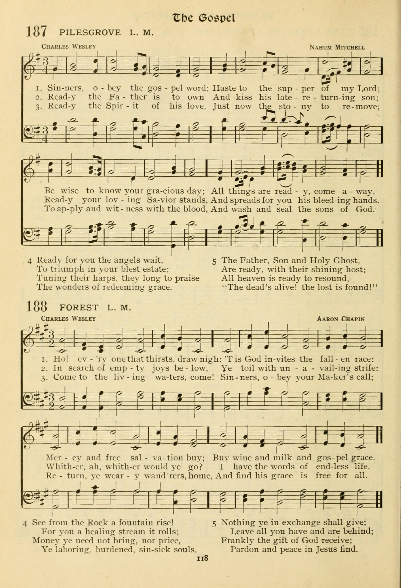

|
|
|
|
|
1.天父为神，无始无终，天地万物，由主造化； |
|
|
|
|
|
|


| Short Name: | Thomas Crawford |
| Full Name: | Crawford, Thomas, 1850-? |
| Birth Year: | 1850 |
Crawford, Thomas, was born in 1850 at Falkirk, Scotland, and now (1906) resides at Stroud Green, London.
His hymn:—
Raise the song of triumph, swell the strains of joy [Service
for Christ], gained a first prize for words and music (both original)
in a S. S. Union competition, 1883. Both are in the Sunday
School Hymnary, 1905, and the words in Voice of Praise,
1887, School Hymns, 1891, and others. [Rev. James
Mearns, M.A.]
--John Julian, Dictionary of Hymnology, New Supplement (1907)
Tune Information
| Title: | FOREST |
| Meter: | 8.8.8.8 |
| Incipit: | 16511 32113 53123 |
| Key: | A Major |
| Source: | The New Living Hymns, by John Wanamaker (Philadelphia, Pennsylvania: John J. Hood, 1902), number 287 |
| Copyright: | Public Domain |
| Tune: | FOREST |
| Composer: | Aaron Chapin |
